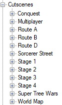

Creating Cutscenes
To create cutscenes you’ll need to use the Cutscenes node. Because it’s a generic editor, it’s used by many different mods so feel free to remove unnecessary dll from the Scripts folder. All cutscenes start with one ore many Cutscene behavior script and then fork from there.
While it is a graphic editor, there is the Read From Text script that allow you to execute scripts with text. You can right click on any script to select Copy as text to get an example.
To add a script just double click on an item from the right and it will be added.